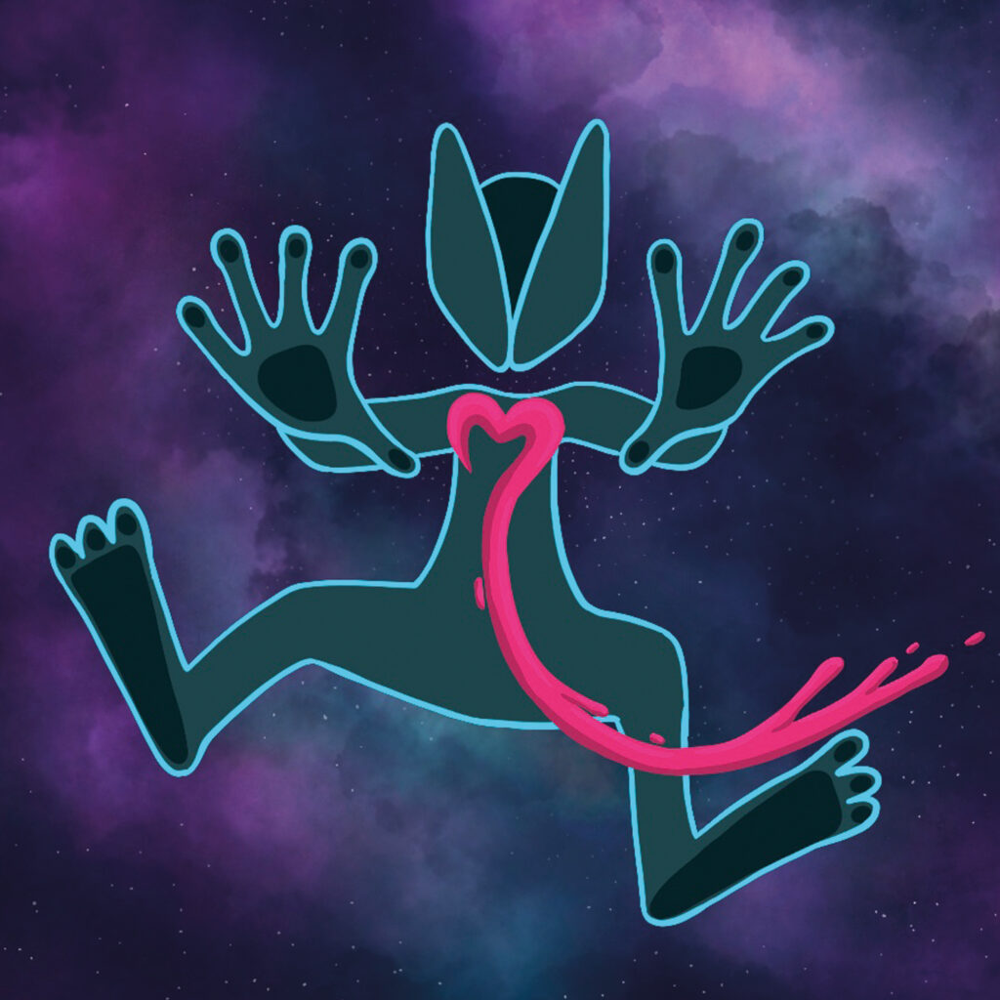
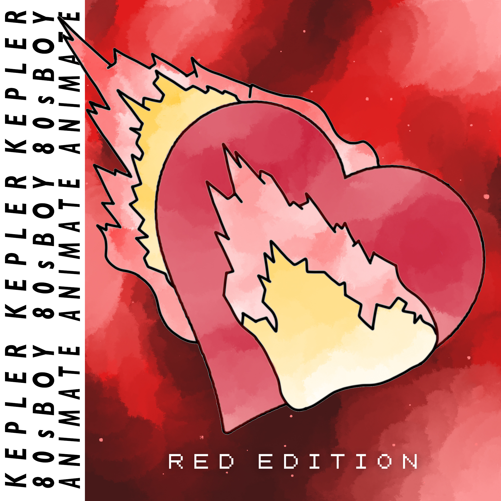
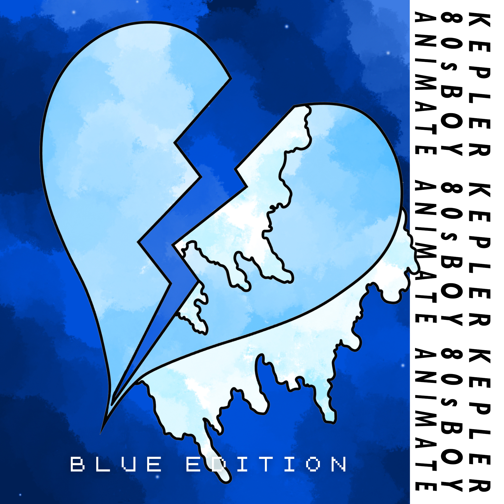
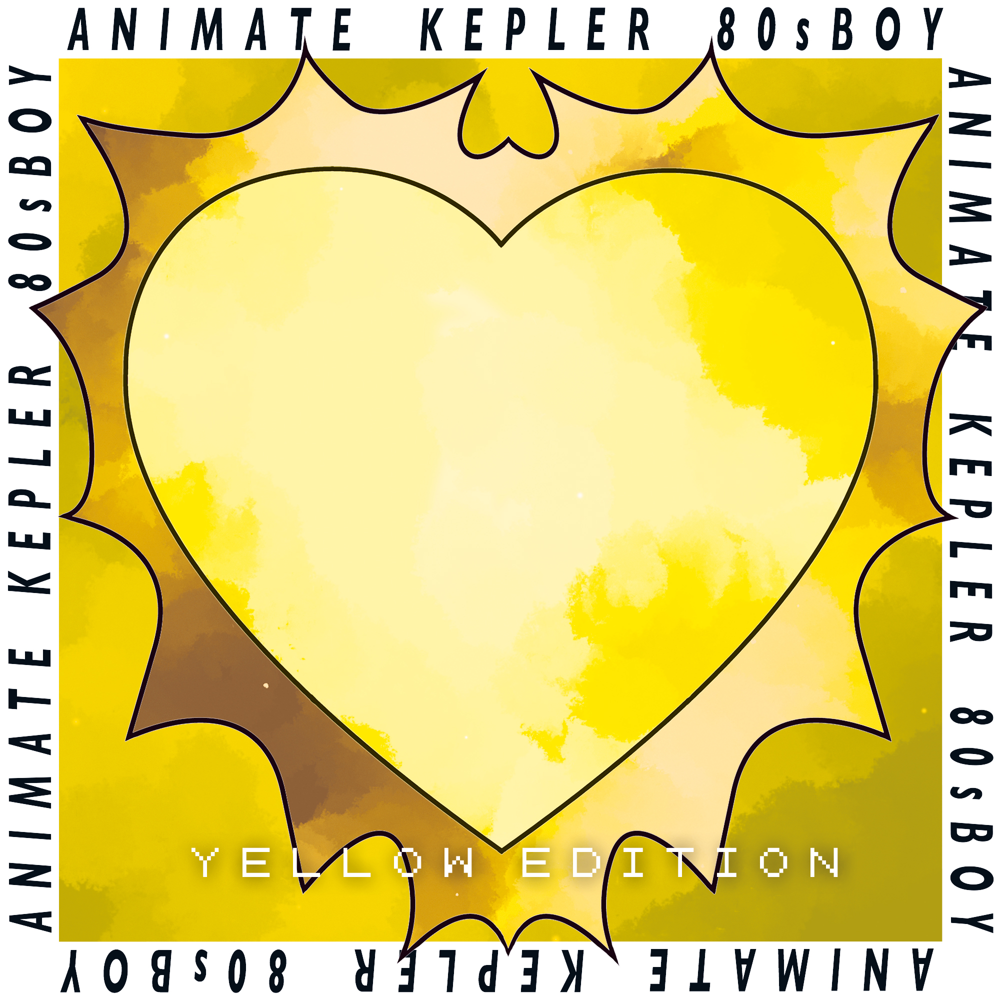

I / O (Abstract)
Künstler verfügen über eine Fülle von "Inputs" – nicht nur Bilder, sondern auch Musik, Texte und eine schwer fassbare Atmosphäre. Generative KI bietet neue "Output"-Werkzeuge, doch es fehlt an etablierten Prozessen, diese Inputs zur Erweiterung einer bestehenden digitalen Identität zu nutzen. Diese Arbeit untersucht dies in einem explorativen Artistic Research-Prozess am Fallbeispiel des Alter Egos "Kepler". In sechs Experimenten – von Bildgenerierung über Musikproduktion bis zur automatisierten Video-Pipeline – wird untersucht, wie sich der kreative Workflow durch KI-Werkzeuge verändert: schneller, aber weniger kontrollierbar; produktiver, aber mit verschobener Autorschaft.


Einleitung
Die Entwicklung generativer KI eröffnet neue Möglichkeiten in der künstlerischen Praxis. Für Künstler, die diese Werkzeuge in ihre bestehenden Workflows integrieren möchten, bedeutet dies eine Phase des Experimentierens, da "Best Practices" oft noch fehlen.
Dieses Artistic Research-Projekt knüpft an eine bestehende künstlerische Kollaboration an: die digitale Identität "Kepler" des Musikers Gavin Just. Aufbauend auf einer gemeinsamen Praxis stellt sich eine Herausforderung: Die visuelle Welt von Kepler entwickelt sich oft langsamer als die musikalische oder performative Ebene.


Bereits existierende Arbeiten, die ich in Unreal Engine erstellt habe.
Ziel der Arbeit ist ein explorativer, KI-gestützter Prozess, der Keplers visuelle Identität erweitert und seine geplante Transformation vorantreibt.
Forschungsfragen
Wie verändert der Einsatz multimodaler KI-Systeme (Text, Bild, Audio) den kreativen Prozess bei der Entwicklung einer digitalen Künstleridentität?
- Workflow: Welche neuen Arbeitsschritte entstehen? Welche fallen weg?
- Autorschaft: Wer ist Autor:in? Wie verschiebt sich meine Rolle?
- Iteration: Wie beeinflusst die Unmittelbarkeit von KI-Output meinen Prozess?
- Scheitern: Was lerne ich aus fehlgeschlagenen Experimenten?
- Ästhetik: Entwickelt sich eine eigene visuelle Sprache?
Methodologie
Diese Arbeit folgt dem Paradigma des Practice-Led Research: Die künstlerische Praxis ist Erkenntnisquelle, Wissen entsteht aus dem Prozess selbst. Systematische Experimente mit verschiedenen KI-Tools werden in iterativen Zyklen durchgeführt: von Bildgenerierung über Musikproduktion bis zur Webentwicklung.
Begleitend dokumentiert ein Journal den kreativen Prozess (Intention, Prozess, Ergebnis, Reflexion). Jeder Eintrag wird anschließend einer KI-gestützten strukturierten Reflexion unterzogen, orientiert an fünf Subfragen: Workflow, Autorschaft, Iteration, Scheitern und Ästhetik.


Fotografien des realen Kepler in Kostüm und Szene.
Releases



